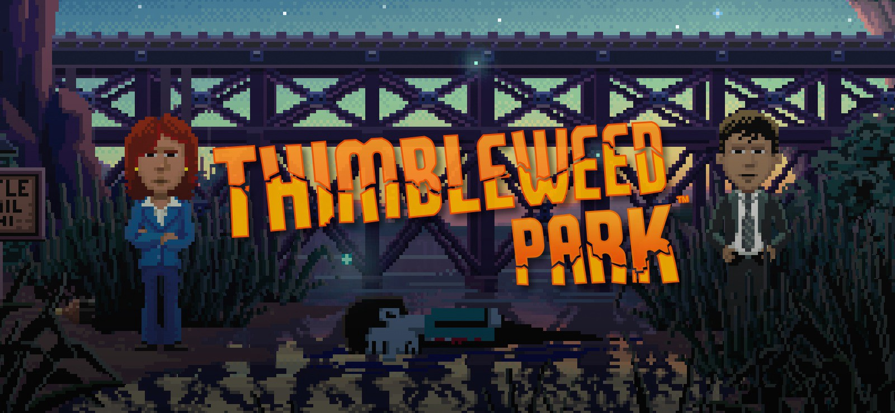

<section class="blog">
	<div class="wrapper">
		<h2 id="contact">my blog.</h2>
		<p class="mid-nav"><a href="#top">HOME </a>| BLOG</p>
		<div class="line2container">
			<div class="lineA"></div>
			<div class="lineB"></div>
		</div>

		<div class="blogContainer">

			<div class="blogCell">
			<h3> My experience switching careers in my 30's to become a developer.</h3>
				<div class="blog-image-container">
					
				</div>
				<div class="blogText">
					<p>I remember being a 17 years old kid and having my own website on geocities, I was so proud of it and all the HTML I was able to teach myself with such little resources available to me. At that time in my life, it was definitely my proudest achievement. </p>
				</div>
				<button>READ MORE</button>
			</div>	


			<div class="blogCell">
				<h3>Why “Thimbleweed Park” may be the best $20 you’ve ever spent.</h3>
				<div class="blog-image-container">
					
				</div>

				<div class="blogText">
					<p>Thimble-what? Thimbleweed Park — remember that name, because it’s the best single player adventure game to come out since Bethesda’s titan of a game “Skyrim’. This throwback to late 80’s ‘point and click’ games is from the same genius who brought us beloved.</p>
				</div>
				<button>READ MORE</button>
			</div>

		</div>
	</div>
</section>